VISUAL DESIGNS
Graphic Design, Branding, Motion Graphics, Visual Communication
Graphic Design, Branding, Motion Graphics, Visual Communication
A visual identity and design system built around the culture of DJing. The brand centers on a tight three-color palette of pure black, white, and high-voltage red, creating instant contrast and attitude without noise. Typography is led by LoRes OT and Bold Oakland, bitmap-influenced display fonts that reference the analog era of music technology and give the brand a raw, anti-corporate edge. Custom iconography draws directly from DJ equipment, with vinyl and CDJ icons functioning as both navigational elements and visual signatures. Animation was baked into the system from the start, with spinning deck icons and image-to-video hover states treating motion as a core part of the brand language rather than an afterthought. The result is a cohesive identity that communicates credibility to a knowledgeable audience while remaining bold enough to pull in anyone curious about the culture.
A personal branding project exploring logo design and motion graphics for a mock brand. The wordmark embeds a robot face character directly into the typography, with the T letterform doubling as the robot's head, creating a mark that is immediately readable as both text and character. The logo was then pushed across multiple motion executions: a 3D rotating band animation wrapping the brand name and tagline around a physical form, a heavy chrome metallic title treatment with cinematic lighting, and a glitch distortion sequence that dissolves the wordmark into noise and neon pixel scatter. Each animation explores a different register of the brand, from bold and physical to corrupted and digital. Taken together the work demonstrates how a single visual identity can stretch across tone and medium without losing coherence.
A mobile UI visual identity built around a deep purple palette that positions the brand confidently in the active lifestyle and urban mobility space. The color choice is deliberate, purple carries enough energy to feel sporty without defaulting to the saturated greens and blues that dominate cycling brands, giving Eculeo immediate shelf distinction. Typography is spaced, uppercase, and architectural throughout, treating every label and button as a typographic moment rather than a functional afterthought. The splash screen leads with full-bleed cycling photography that immediately communicates community and movement, letting the visual story do the selling before a single word is read. Gradient transitions from white to purple across the auth screens create a sense of depth and continuity, pulling the user through the flow with visual momentum. The result is a brand that feels trustworthy, active, and considered without overcomplicating its message.

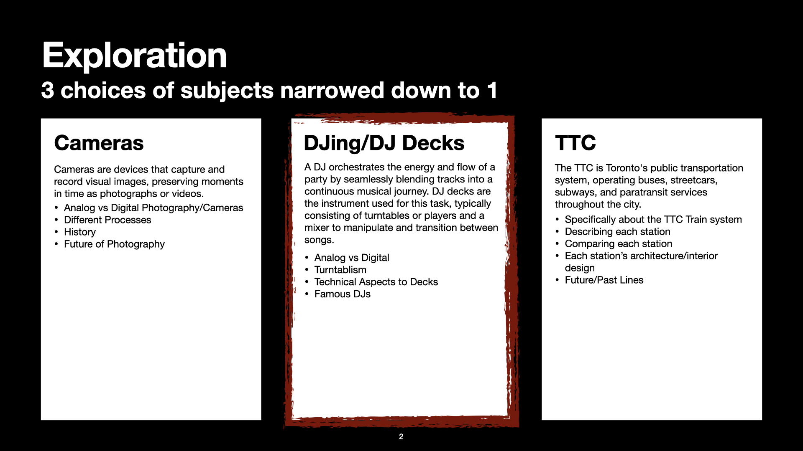
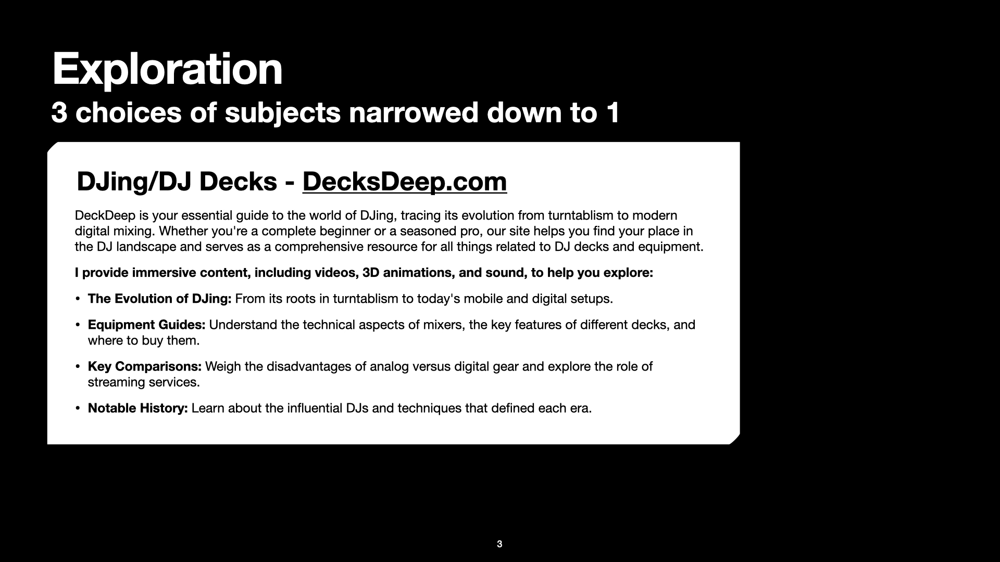

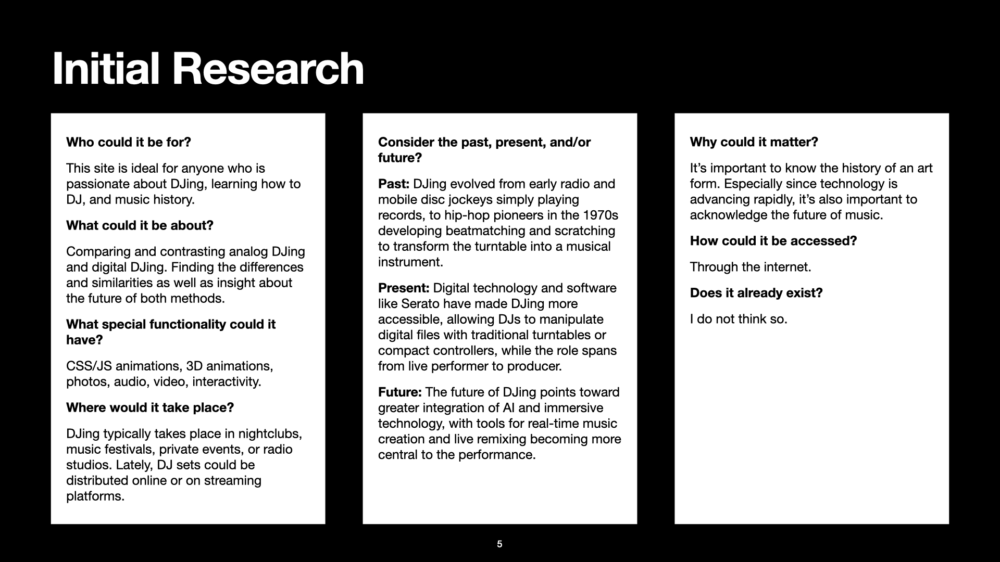
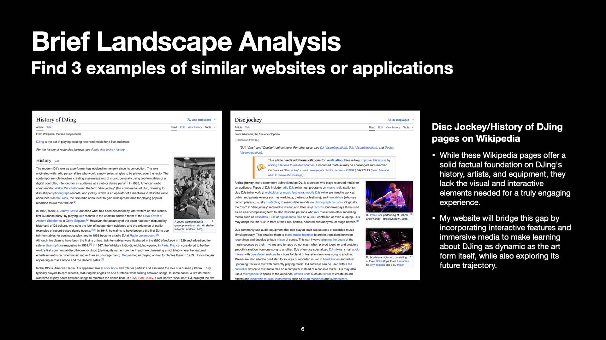

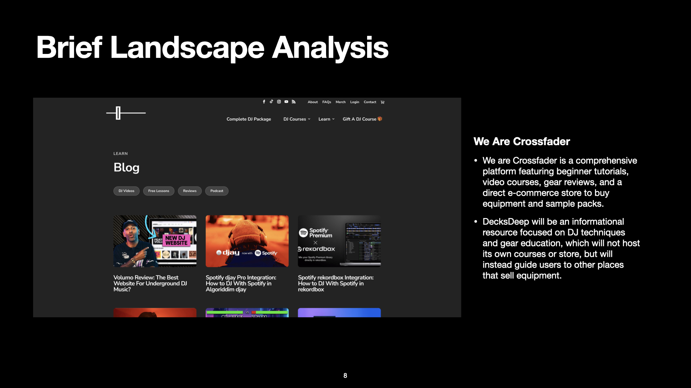
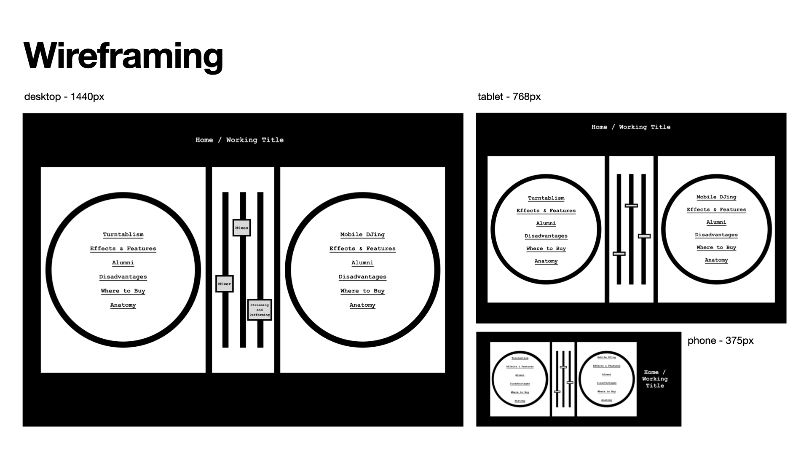


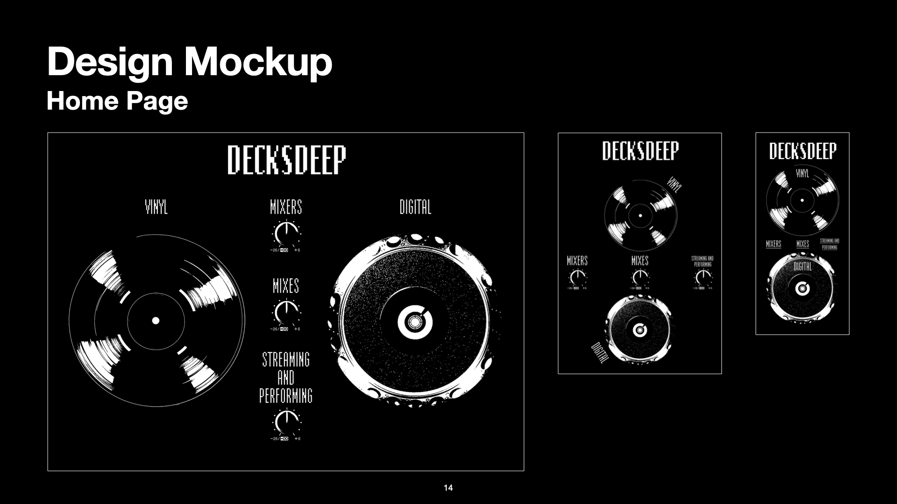
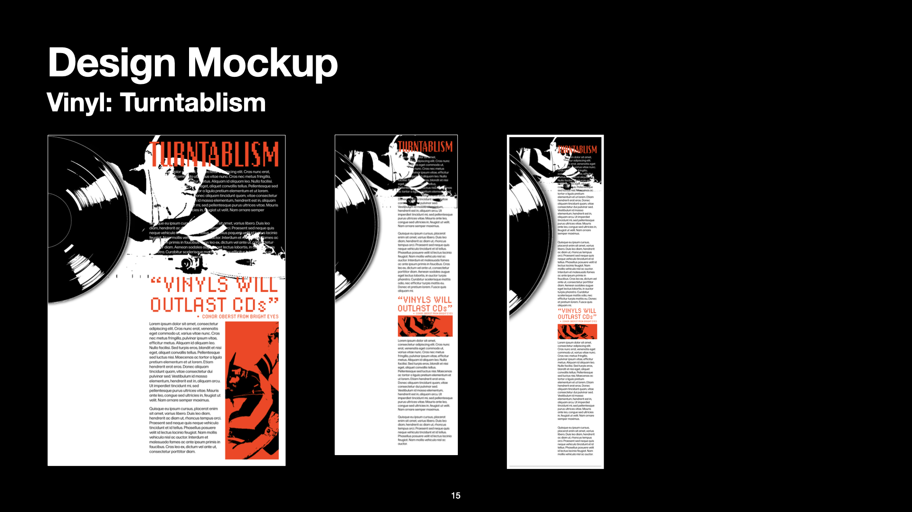

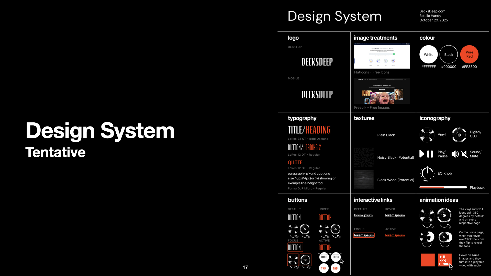
A Photoshop infographic combining harm reduction messaging with the cultural history of rave revival. The piece covers health risks including dehydration, drug exposure, and hearing damage, alongside a contextual look at how underground rave culture went global through the internet and platforms like Boiler Room. World maps track the worldwide growth of rave culture over 30 years, while vertical bar charts and typographic callouts visualize substance use and sobriety patterns among attendees. The visual language pulls directly from rave aesthetics, using a black background, aggressive red typography, distressed display lettering, and illustrated speaker icons to make safety information feel native to the culture it addresses rather than imposed on it. The result is a piece of data communication that earns the attention of its audience by speaking their visual language.

These two Blender animations demonstrate a strong command of 3D character modeling, procedural shading, lighting, and environment design. SunMan places an abstract contoured humanoid in a real-world landscape through live-action compositing, showing comfort working across the 3D and physical divide. DanceMan presents a glowing, Voronoi-textured figure centered in a deep blue geometric environment with reflective surfaces and dramatic rim lighting, demonstrating scene composition, material design, and the ability to build atmosphere entirely within a 3D space. Both pieces show a distinct artistic voice alongside the technical foundation to execute it.
These After Effects animations push a static logo identity into motion, exploring what a brand can become when it moves. The mark is rendered across three distinct executions: a 3D rotating band wrapping the wordmark around physical form, a chrome cinematic title treatment with dramatic lighting, and a glitch dissolution into neon pixel noise. Each treatment expands the brand's range without losing its core, demonstrating that a strong logo is not a single fixed image but a living system.
This body of experimental video work spans AI image synthesis, real-time rendering, and browser-based moving image as overlapping creative territories. In Betu, Runway AI pushes source footage through surrealist, painterly transformations, collapsing the boundary between photography and generative imagery. A separate photogrammetry study renders scanned human forms through TouchDesigner, treating the point cloud mesh as a material that multiplies and bleeds under deep red light. A projection piece maps a luminous body scan onto a flat surface in a darkened room, letting the form dissolve back into ambient space over time. Self Portrait fragments my own likeness into a tiled browser interface built in HTML/CSS, presenting extreme facial close-ups in high-contrast color fields as a study in digital intimacy and surveillance aesthetics.
These experiments push UI motion beyond transitions and hover states into something more expressive and intentional. For Eculeo, a bike wheel icon animates as a branded loading sequence, turning a functional moment into a brand touchpoint. For DecksDeep, vinyl and CDJ icons spin continuously as live navigation elements, making the interface behave like the equipment it describes. One piece reimagines navigation entirely, replacing conventional menus with fish swimming through an underwater scene, where each category is a living creature moving through the space. W.RLD goes furthest, using kinetic typography, overlapping scrolling layers, and fragmented text columns to make the interface itself an argument about information overload. Across all these projects the goal is the same: motion as meaning, not decoration, where how something moves tells you something the static design cannot.
A self-directed coffee table book designed in Adobe InDesign, with all written content AI-generated and curated by me. The book explores the science, ethics, culture, and comedy of laughter across a series of editorial spreads, each with its own distinct visual register. I worked with bold mixed-typography hierarchies, full-bleed photography, and shifting color palettes to give each chapter a tonal identity while maintaining cohesion across the publication. From warm sepia introduction pages to high-contrast comedy spreads and gradient-washed portrait sections, the layout decisions actively support the content's shifts in register. The project demonstrates my ability to art-direct a long-form publication with editorial intention and visual range.
Get Smart Once by The Doctors is a conceptual album package I designed in Adobe Photoshop as a class project. The cover layers a surrealist mandala-like floral form against deep jewel-toned collage work, while the back panel pushes into warped psychedelic portraiture with contour-line patterning and distorted color. Typography is treated as texture throughout, with stacked, distressed lettering that matches the visual chaos of the era being referenced. The full package demonstrates confident art direction within a defined genre aesthetic.
This series of personal poster projects spans concert promotion, street-scale murals, and gallery print work, each designed in Photoshop with a distinct visual language. The Los Growlers show poster uses a duotone red and purple palette with a triple-exposure figure treatment and distressed texture to evoke 1960s rock vernacular. The Beach Goth poster strips back to pure typography, letting letterpress-influenced slab serifs and a sunburst medallion carry the composition. The boxing mural works in a mirrored screen-print aesthetic designed to read at street scale. The triptych builds kaleidoscopic symmetry from layered photographic source material for gallery display. Each piece adapts visual strategy to its format and context.
Rose Cathy Handy's Going from Homeless to CEO: The No-Excuse Handbook required a cover that matched the author's bold personal brand and the book's tone of earned confidence. I adapted the layout in Photoshop, working with a high-impact cyan and magenta palette that reads immediately at retail scale. The front cover balances a full-length author portrait against a layered typographic hierarchy, mixing serif script and display weight to give the title presence. The back cover maintains the same color system while giving space to the author biography and a clear call to action. The result is cohesive, shelf-ready, and client-directed.
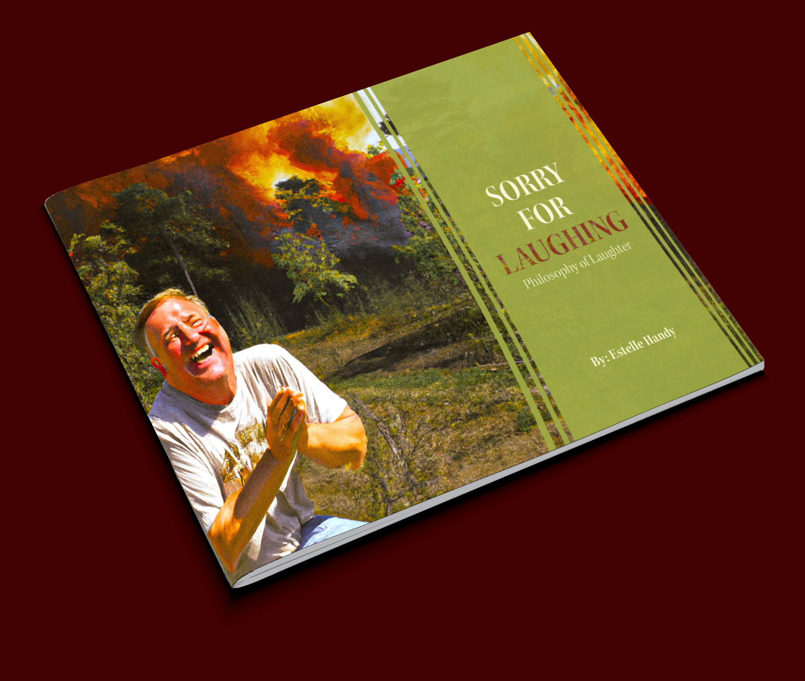
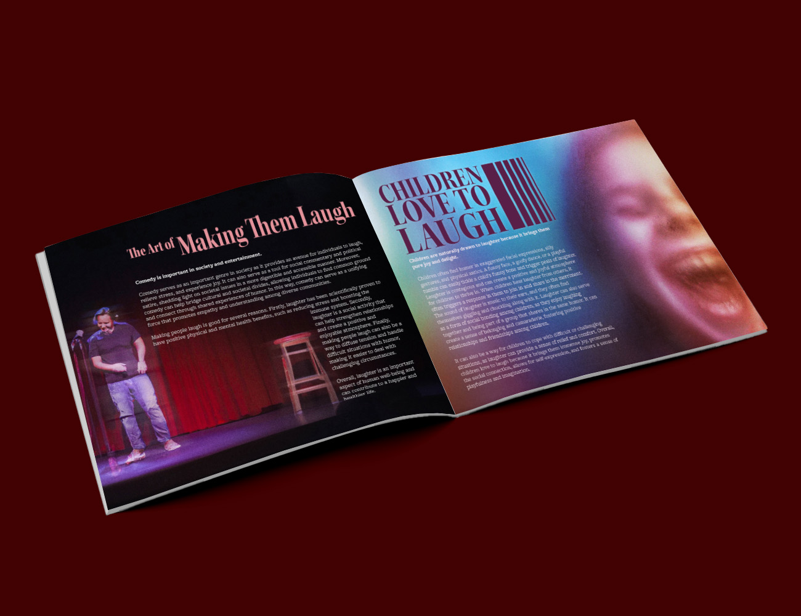
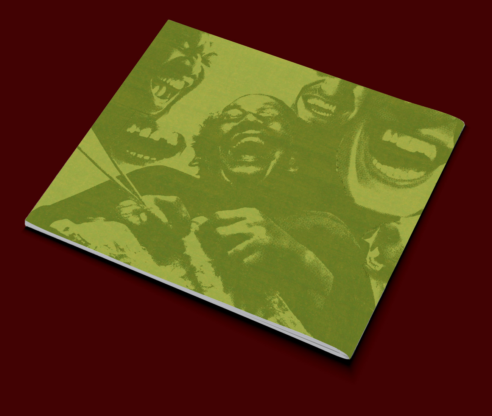
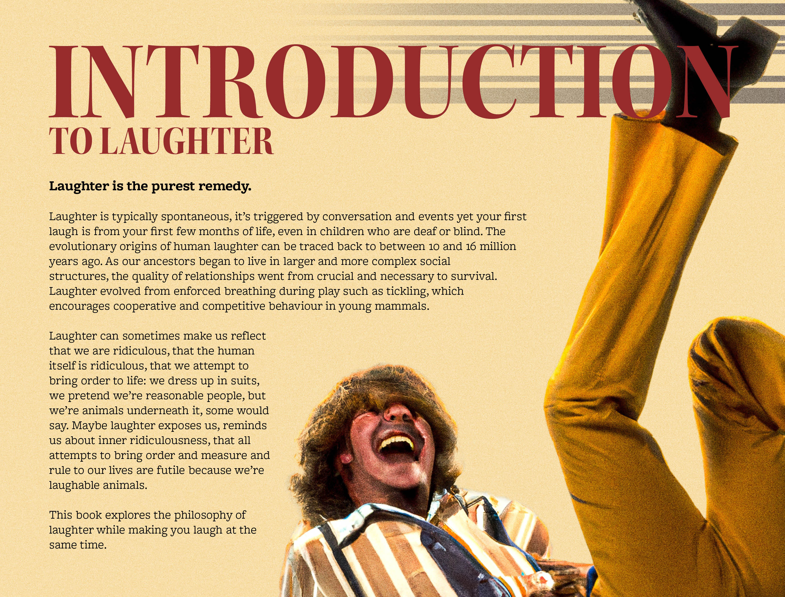
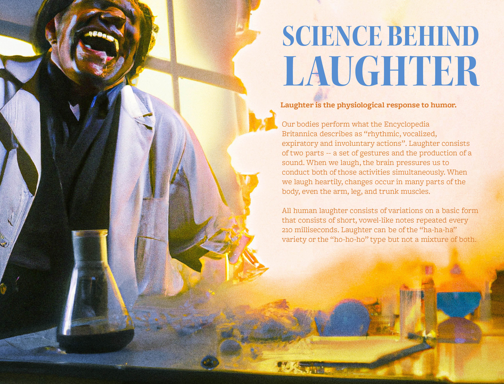
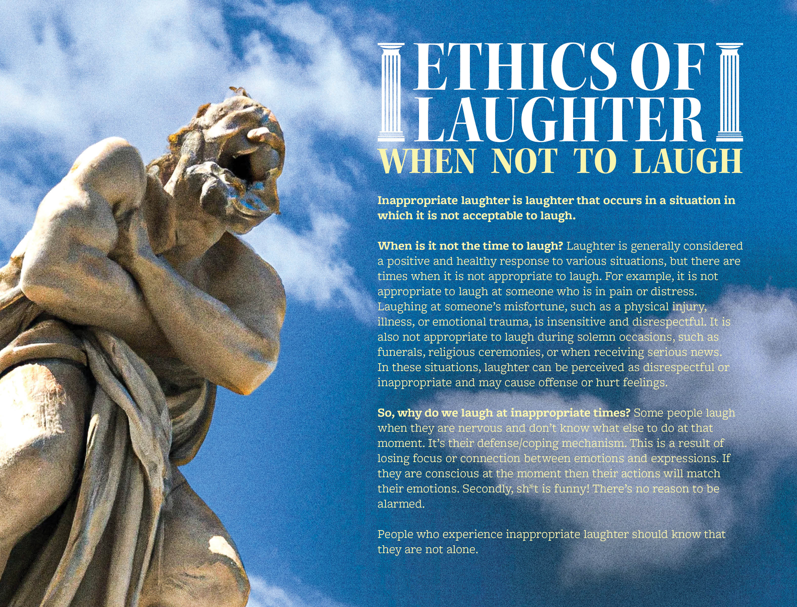
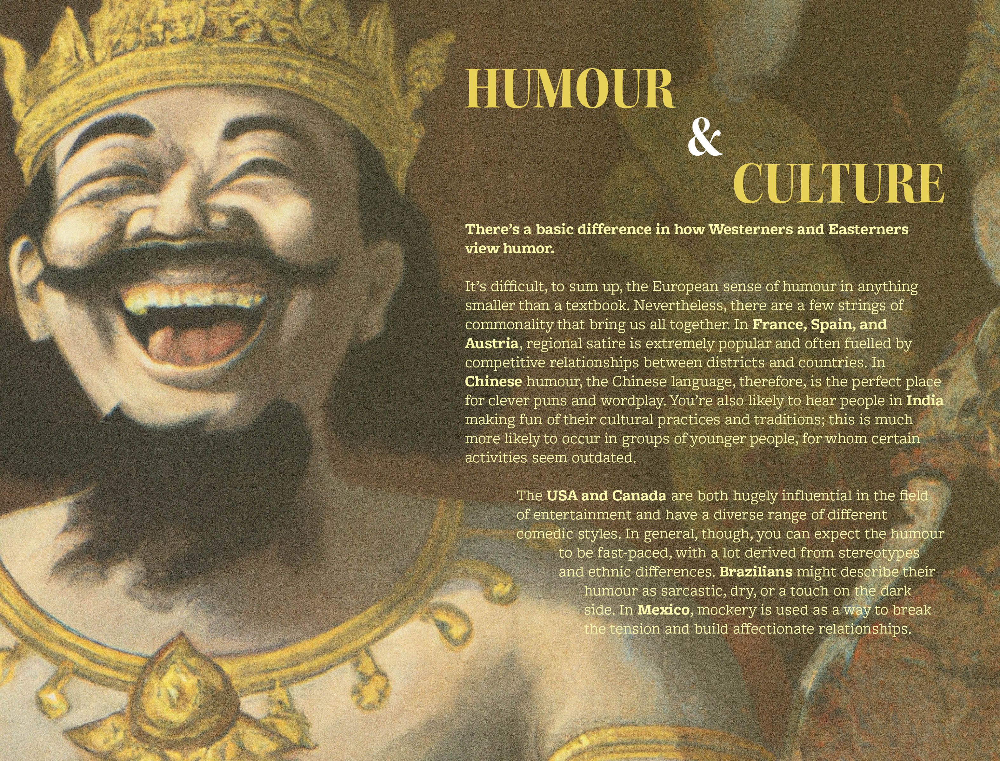
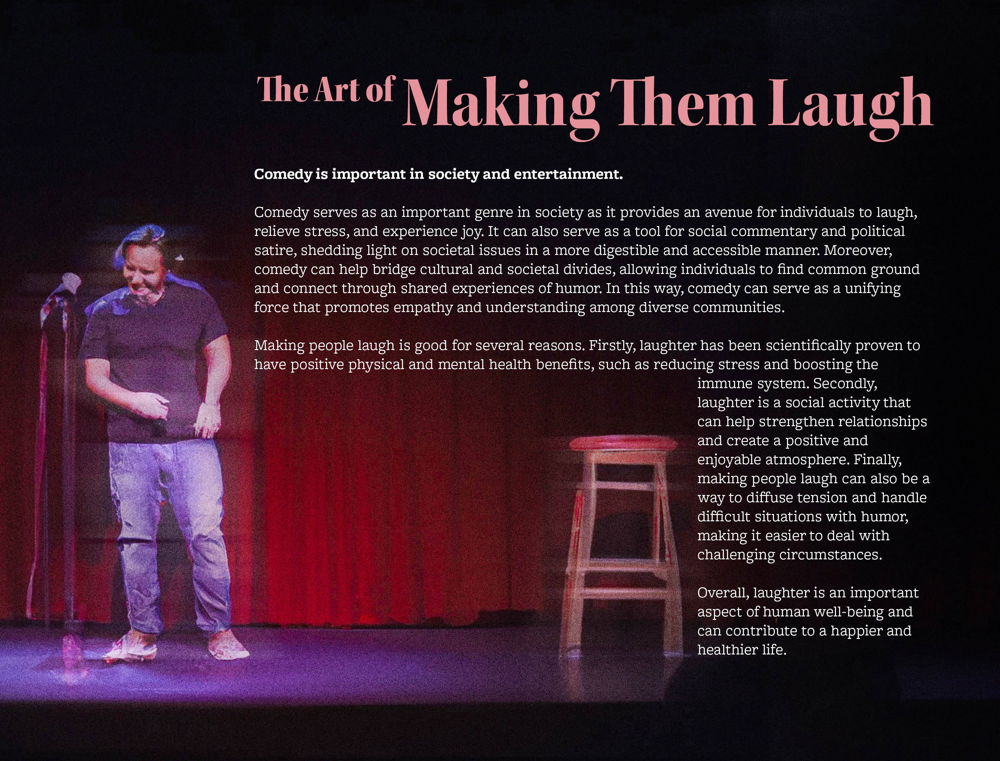
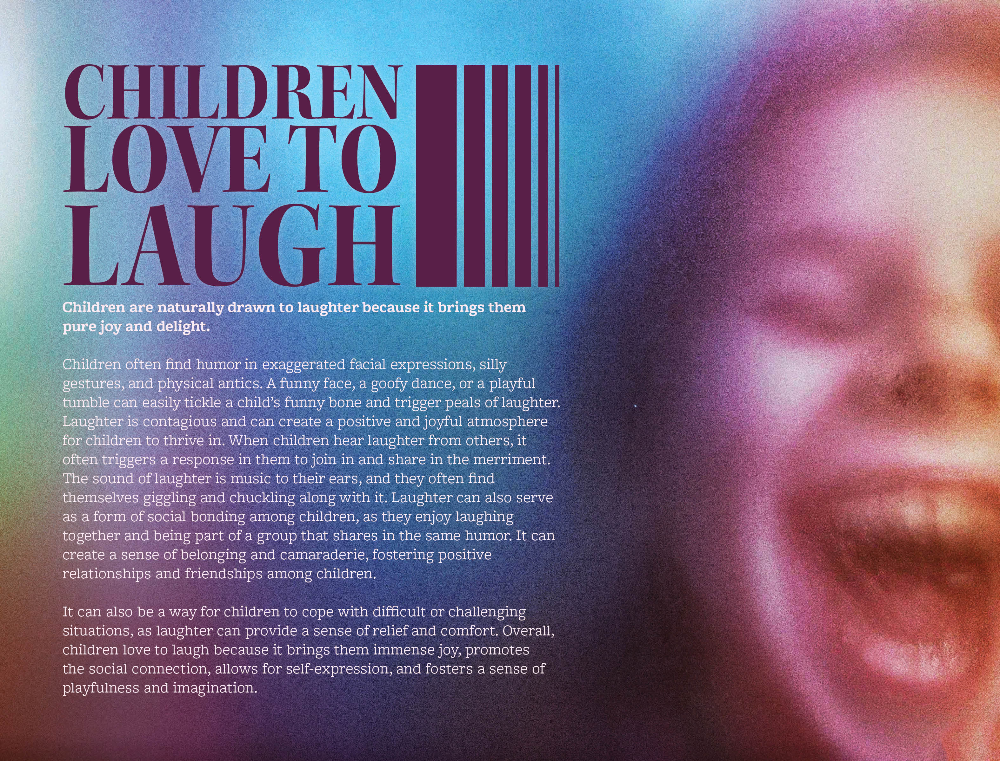
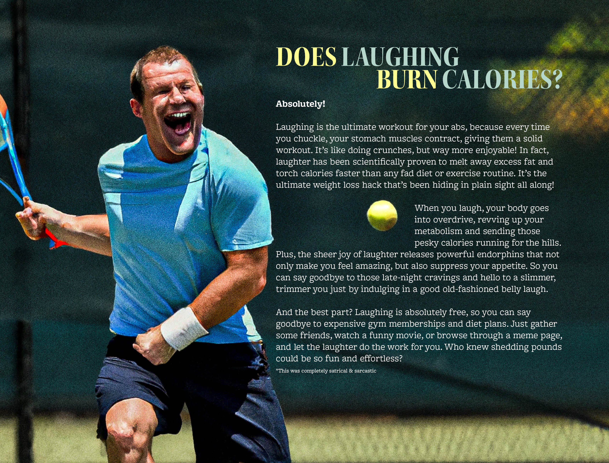
Shot on 35mm film during a trip to Paris, this series documents a couple I connected with online whose aesthetic and relationship I wanted to capture on film. Working entirely in natural light across the streets, stairwells, and rooftops of the city, I directed compositions that balanced candid intimacy with deliberate framing. The grain, color shifts, and occasional light leaks of the analog process are part of the work rather than incidental to it, giving the images a physical weight that mirrors the emotional register of the subject matter. Across duotone, monochrome, and double-exposed frames, the series moves between portraiture, documentary, and something closer to personal mythology.
This max patch is for a light installation called Light Graffiti. The patch emits lights onto a wall, projecting shapes and text relating to rave/dance culture encouraging the audience to move and do what the text intructs them to do. The lights include one text saying "SHAKE" and two still frames of a woman dancing so when the light flashes and alternates, the frames imitiates a dancing motion. This installation is best suitable at a rave setting and I hope in the future I install more lights to cover the whole room.